พงศ์แห่งวิจิตรศิลป์: ประเภทของตัวละคร
ทำความรู้จักศิลปะการจำแนกตัวละครในการแสดงไทย ที่สะท้อนบุคลิกภาพ อารมณ์ และสถานภาพผ่านเครื่องแต่งกายและท่วงท่าร่ายรำอันเป็นเอกลักษณ์
ตัวพระ (The Hero / Male Role)
• ลักษณะ: ตัวแสดงชายที่มีรูปร่างโปร่งระหง สง่างาม ใบหน้าหมดจด (ในการแสดงโขนจะไม่สวมหัวโขน แต่จะแต่งหน้าหรือสวมชฎาแทน)
• บุคลิกและท่ารำ: ท่ารำสะท้อนความกล้าหาญ ความเป็นผู้นำ และความอ่อนโยนตามลักษณะขัตติยราชสำนัก ท่ารำจะกว้างและผ่าเผย เช่น ท่าพรหมสี่หน้า ท่าสิงโตเล่นหาง
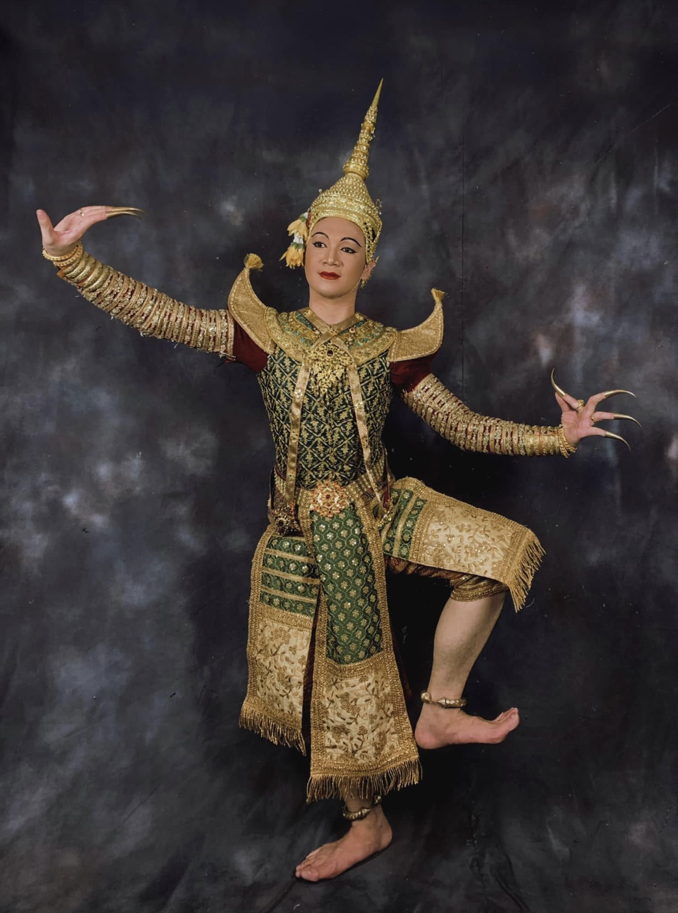
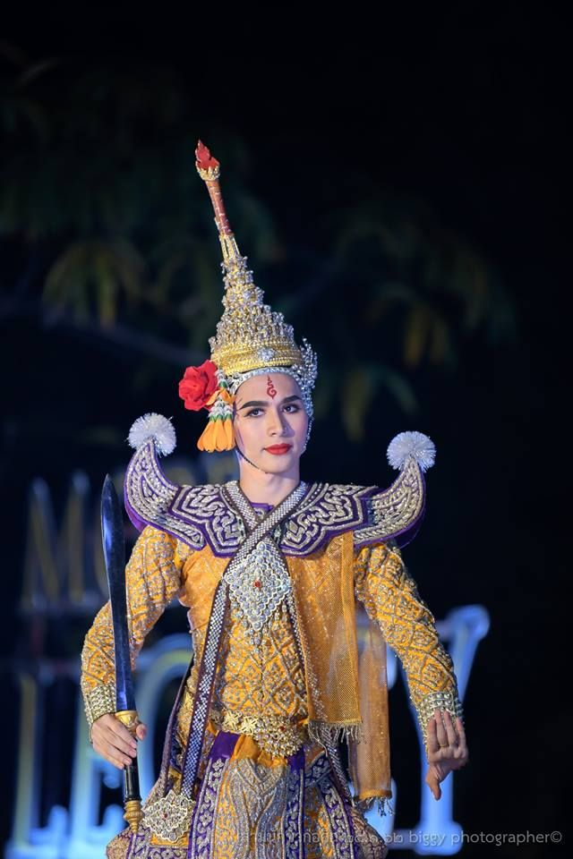
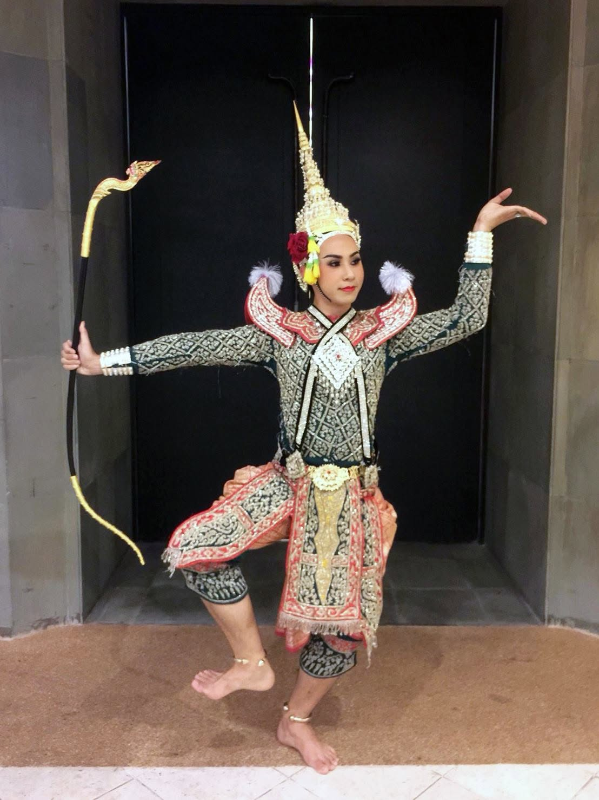
ตัวพระคือตัวแทนของบุรุษเพศชั้นสูง วีรบุรุษ กษัตริย์ หรือมหาเทพผู้ทรงเกียรติยศ เช่น พระราม และพระลักษมณ์ ในศิลปะนาฏยศิลป์ไทย การคัดเลือกผู้ที่จะมาแสดงเป็นตัวพระในอดีตนั้นมีความพิถีพิถันและเข้มงวดเป็นอย่างยิ่ง โดยผู้แสดงจะต้องมีรูปร่างลักษณะที่โปร่งระหง ส่วนสัดของร่างกายต้องมีความสมดุล วงหน้าเรียวรีเป็นรูปไข่ตามแบบพิมพ์นิยมโบราณ เพื่อให้เวลาเยื้องกรายร่ายรำบนเวทีดูสง่างามประดุจภาพภาพจิตรกรรมฝาผนังที่หลุดออกมามีชีวิต
ในด้านอัตลักษณ์และการแต่งกายของการแสดงโขน ตัวพระจะถูกแบ่งออกเป็นสองรูปแบบหลัก คือ "พระหน้าทอง" ซึ่งเป็นตัวละครเอกที่จะไม่สวมหัวโขน แต่จะใช้การแต่งหน้าอย่างนวลละออและสวมชฎามงกุฎยอดต่างๆ แทน และ "พระเสนา" หรือทหารเอกฝ่ายพระรามที่จะสวมหัวโขนแบบไม่มีมงกุฎยอด เครื่องแต่งกายของตัวพระเรียกว่าการ "ยืนเครื่องตัวพระ" ซึ่งมีความประณีตและวิจิตรบรรจงเป็นอย่างมาก ประกอบด้วยเสื้อฉลองพระองค์แขนยาวที่ปักลวดลายดิ้นทองหนาแน่น สวมสนับเพลา (กางเกง) ห้อยเจียระบาด (ผ้าคาดเอวปล่อยชาย) และประดับด้วยเครื่องศิราภรณ์ตามฐานันดรศักดิ์ของตัวละครนั้นๆ
สำหรับศิลปะการร่ายรำของตัวพระนั้น จะยึดหลักสุนทรียศาสตร์แห่งความผ่าเผย สงบนิ่ง ทว่าแฝงไปด้วยความอ่อนโยนละมุนละไม ท่วงท่าการก้าวเท้าและการตั้งวง (การดัดแขนให้โค้งได้รูป) จะต้องมีความกว้างและได้เหลี่ยมมุมที่พอดีกับสรีระ ท่ารำสำคัญของตัวพระมักจะสื่อสารถึงความเป็นผู้นำ ความรัก ความเมตตา และความกล้าหาญ เช่น ท่าพิศมัยเรียงหมอน หรือท่ายูงฟ้อนหาง ซึ่งสะท้อนถึงกรรมวิธีการฝึกฝนอันยาวนานและความประณีตสูงสุดของนาฏศิลป์ราชสำนัก
ตัวนาง (The Heroine / Female Role)
• ลักษณะ: ตัวแสดงหญิงที่มีกิริยามารยาทเรียบร้อย อ่อนช้อย รูปร่างอรชร นุ่มนวล
• บุคลิกและท่ารำ: ท่ารำเน้นความประณีต ชดช้อย และการเก็บกิริยา อาศัยการขยับข้อมือ นิ้วมือ (การจีบและการตั้งวง) และการเอียงศีรษะเพื่อสื่อความรู้สึก เช่น การเอียงอาย หรือการโศกเศร้า
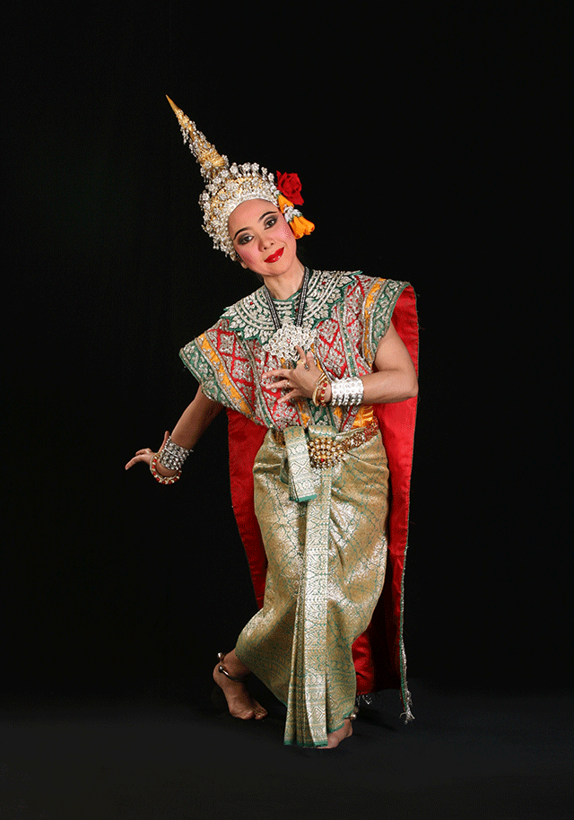
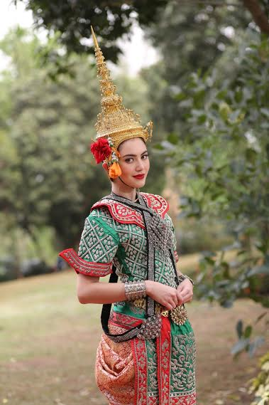
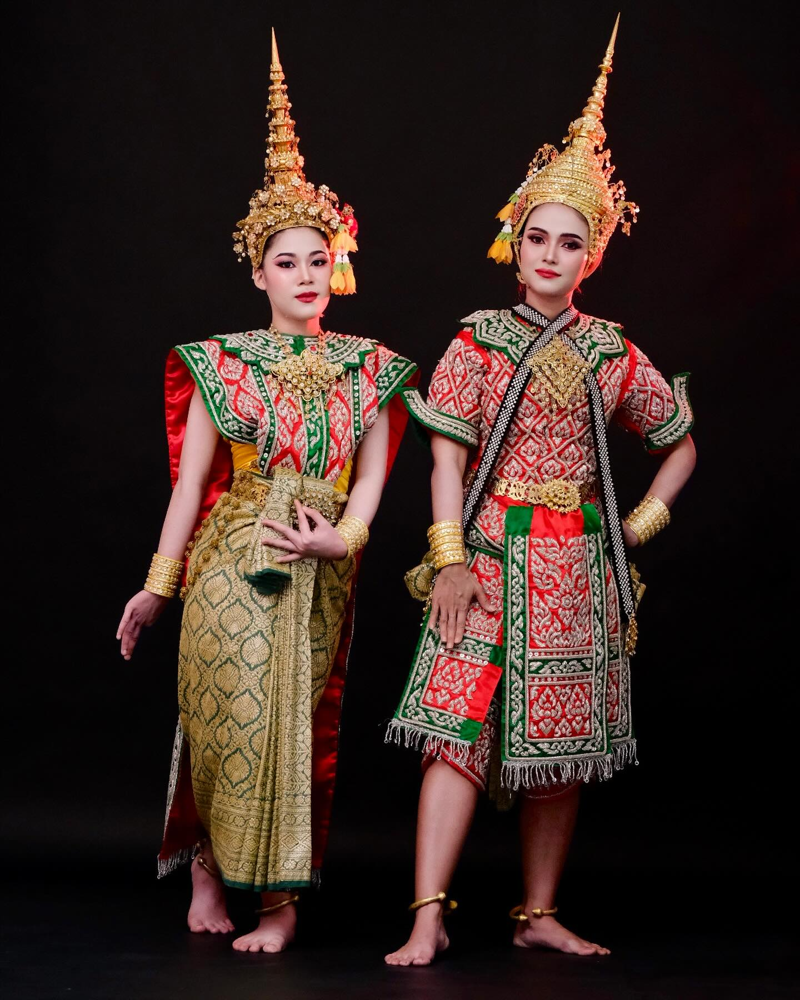
ตัวนางคือตัวแทนของสตรีเพศที่มีสถานภาพสูงในสังคม ไม่ว่าจะเป็นพระมเหสี เจ้าหญิง ธิดาพญายักษ์ หรือนางอัปสรบนสรวงสวรรค์ เช่น นางสีดา นางเบญกาย หรือนางบุษบา บุคลิกภาพของตัวนางถูกออกแบบมาเพื่อสะท้อนค่านิยมและความงามของกุลสตรีไทยในอดีต นั่นคือ มีความสำรวมในกิริยามารยาท นุ่มนวล อ่อนหวาน แต่อ่อนนอกแข็งใน ในยามที่ต้องเผชิญหน้ากับอุปสรรค ตัวนางในวรรณคดีไทยมักจะแสดงออกถึงความเด็ดเดี่ยว กล้าหาญ และยึดมั่นในความซื่อสัตย์ต่อความรักยิ่งกว่าชีวิตตนเอง
ในส่วนของการแต่งกายและอัตลักษณ์ภายนอก ตัวนางจะใช้การแต่งหน้าที่งดงาม ละมุนตา ไม่สวมหัวโขนปิดบังใบหน้า (ยกเว้นในกรณีที่เป็นนางยักษ์แปลงกายมา หรือตัวละครนางวานรบางตัว) เครื่องแต่งกายจะเรียกว่า "ยืนเครื่องตัวนาง" ซึ่งมีจุดเด่นและเอกลักษณ์ที่แตกต่างจากตัวพระอย่างชัดเจน คือการห่มผ้าสไบปักดิ้นทองอย่างวิจิตรคลุมไหล่ซ้ายแล้วทิ้งชายผ้าสไบยาวไปทางด้านหลัง สวมเสื้อในนาง ผ้านุ่งยกทองที่จับจีบหน้านางอย่างประณีตเรียบร้อย (มีชายพกยื่นออกมาด้านหน้า) และสวมศิราภรณ์เครื่องประดับศีรษะ เช่น รัดเกล้ายอด รัดเกล้าเปลว หรือเกี้ยวตามยศถาบรรดาศักดิ์
ศิลปะการร่ายรำของตัวนาง ถือเป็นที่สุดแห่งความอ่อนช้อยและพลิ้วไหว ลีลาและวงรำจะมีความกระชับและแคบกว่าตัวพระ จะไม่มีการกางแขนหรือก้าวเท้าที่กว้างจนเกินงาม แต่จะเน้นไปที่ความละเอียดอ่อนของการขยับข้อมือ นิ้วมือ และข้อศอกที่ถูกดัดจนอ่อนโค้งชดช้อย การก้าวเดินจะมีความแช่มช้า นุ่มนวลจนดูเหมือนลอยได้ การแสดงอารมณ์ความรู้สึกจะอาศัย "ภาษาท่า" ที่ละเมียดละไมเป็นพิเศษ เช่น การเอามือป้องอกในท่าโศกเศร้า หรือการเอียงศีรษะหลบสายตาเพื่อแสดงความเหนียมอาย
ตัวยักษ์ (The Demon / Giant Role)
• ลักษณะ: ตัวละครฝ่ายอธรรมหรืออสูร มีรูปร่างใหญ่โต กำยำ ในการแสดงโขนต้องสวม "หัวโขนยักษ์" ที่มีสีสันและลักษณะตา/ปากแตกต่างกันตามยศถาบรรดาศักดิ์ เช่น ทศกัณฐ์ อินทรชิต
• บุคลิกและท่ารำ: ท่ารำมีลักษณะกว้าง ดุดัน เข้มแข็ง และน่าเกรงขาม การก้าวเท้าและขยับเหลี่ยมขา (เหลี่ยมยักษ์) จะกว้างกว่าตัวละครอื่นเพื่อแสดงถึงพละกำลัง
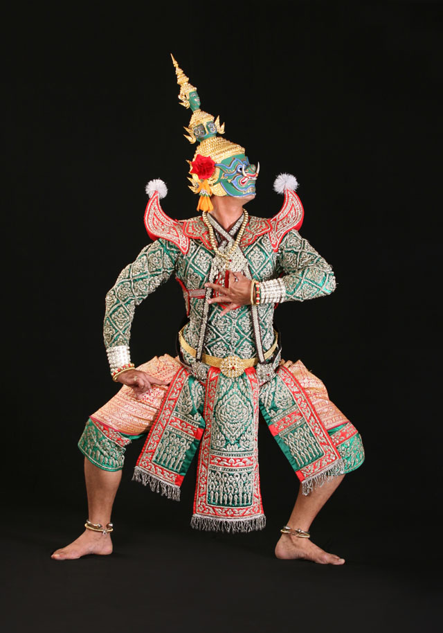
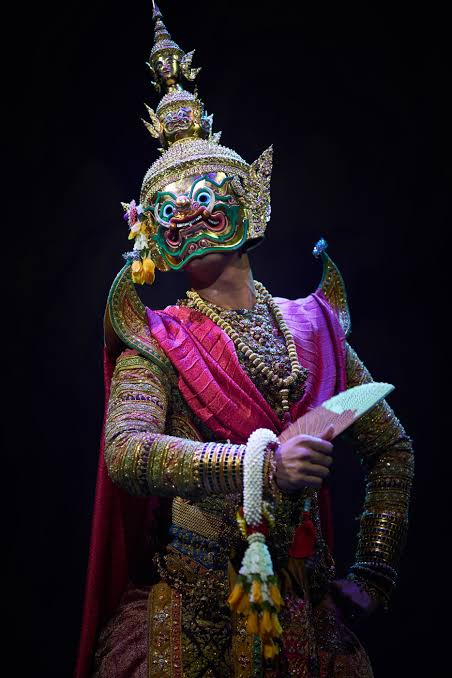
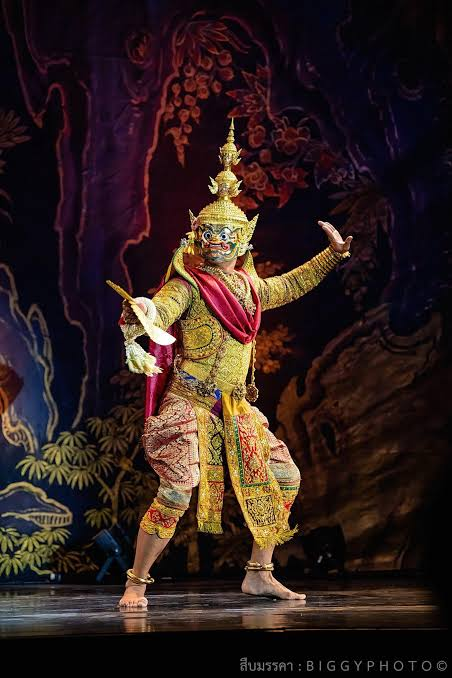
ตัวยักษ์หรืออสูรในการแสดงละครไทย ไม่ได้เป็นเพียงสัตว์ประหลาดหรืออมนุษย์ที่ไร้ความคิดและดุร้ายเพียงอย่างเดียว แต่ยักษ์คือภาพแทนของราชา จอมทัพ และผู้มีอิทธิฤทธิ์ปาฏิหาริย์ในวรรณคดี มีทั้งฝ่ายอธรรมที่เต็มไปด้วยกิเลสตัณหาอย่าง ทศกัณฐ์ อินทรชิต และฝ่ายธรรมะที่เปี่ยมด้วยสติปัญญาอย่าง พิเภก ตัวละครฝ่ายยักษ์สะท้อนถึงพลังอำนาจ ความโกรธ ความโลภ และศักดิ์ศรีอันยิ่งใหญ่ทนทาน การคัดเลือกผู้ที่จะมาแสดงเป็นตัวยักษ์จึงต้องเลือกผู้ที่มีโครงสร้างร่างกายที่ใหญ่โต กำยำ ลีนหนา และมีช่วงขาที่แข็งแรงมากเป็นพิเศษเพื่อรองรับน้ำหนักและท่ารำที่ต้องใช้พลังงานสูง
หัวใจสำคัญที่เป็นอัตลักษณ์ของตัวยักษ์คือ "หัวโขนยักษ์" ซึ่งมีหลากหลายรูปแบบตามตระกูลและการจำแนกวงศ์ยักษ์ โดยจะแบ่งตามลักษณะของปาก (เช่น ปากขบ ปากแสยะ) และลักษณะของดวงตา (เช่น ตาจระเข้ ตาโพลง) เครื่องแต่งกายของตัวยักษ์จะมีลวดลายการปักดิ้นทองที่หนาแน่นและดูดุดันกว่าตัวละครอื่น มีการประดับ "อินธนู" (เครื่องประดับบ่ารูปศร) เพื่อช่วยเพิ่มความกว้างของช่วงไหล่ให้ดูน่าเกรงขาม นุ่งผ้าคาดเอวและมีหางไหลปล่อยชายอยู่ด้านหลัง
สำหรับศิลปะการร่ายรำของยักษ์นั้น จะยึดหลักการสร้าง "เหลี่ยมยักษ์" ที่เด่นชัดและแข็งกร้าว คือการกางขาออกกว้าง ย่อเข่าลงต่ำ ท่วงท่ารำจะมีความดุดัน กระแทกกระทั้น เข้มแข็ง และโอ่อ่า มีการตบเท้าเสียงดังสะเทือนเวทีเพื่อข่มขวัญศัตรู แต่ในขณะเดียวกันเมื่อถึงบทรัก บทรำพึงรำพัน หรือบทโศกเศร้าสะเทือนใจ ยักษ์ก็จะเปลี่ยนท่วงท่าเป็นความนุ่มนวลที่ยังคงไว้ซึ่งความยิ่งใหญ่และสง่างาม ถือเป็นกระบวนท่าร่ายรำที่ฝึกฝนได้ยากที่สุดประเภทหนึ่งในบรรดาตัวละครทั้งหมด
ตัวลิง (The Monkey / Simian Role)
• ลักษณะ: ตัวละครฝ่ายวานรที่เป็นทหารเอกทัพพระราม ในการแสดงโขนต้องสวม "หัวโขนลิง" ที่ไม่มีมงกุฎ (ยกเว้นตัวพญาวานร เช่น หนุมาน สุครีพ องคต)
• บุคลิกและท่ารำ: ท่ารำเน้นความคล่องแคล่ว ว่องไว ลุกลน และสนุกสนาน ผสมผสานท่ากายกรรม (การตีลังกา การกระโดด) และพฤติกรรมตามธรรมชาติของลิง เช่น ท่าเกา ท่าเหลียวหลัง
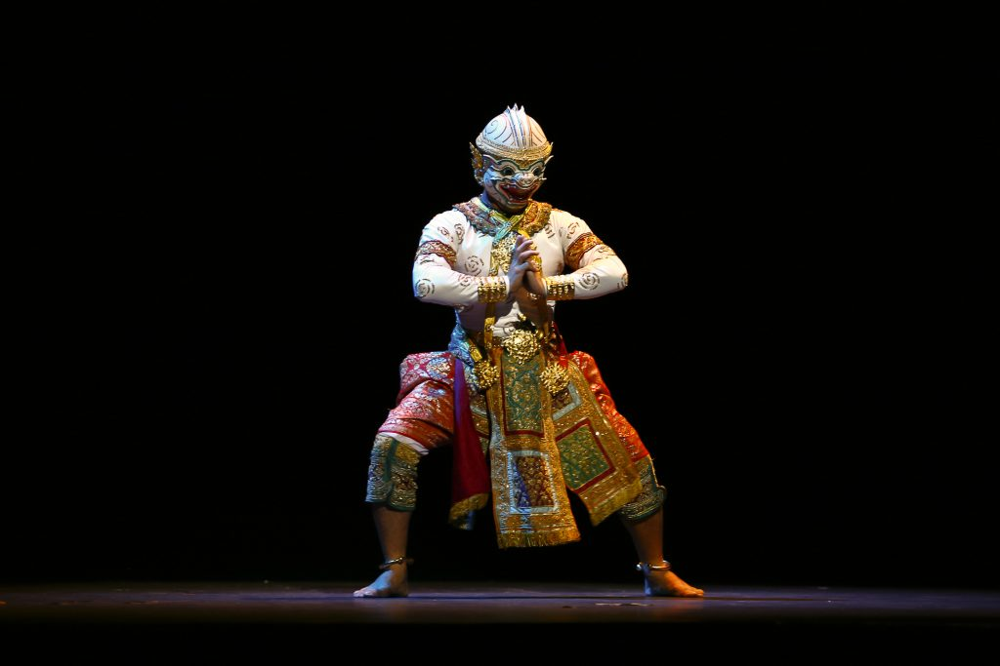
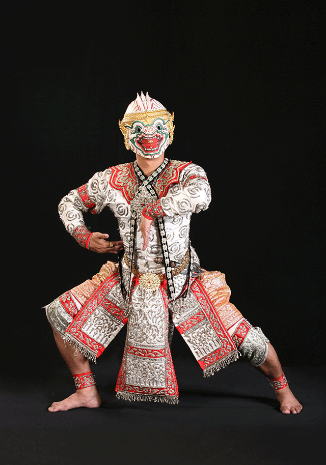
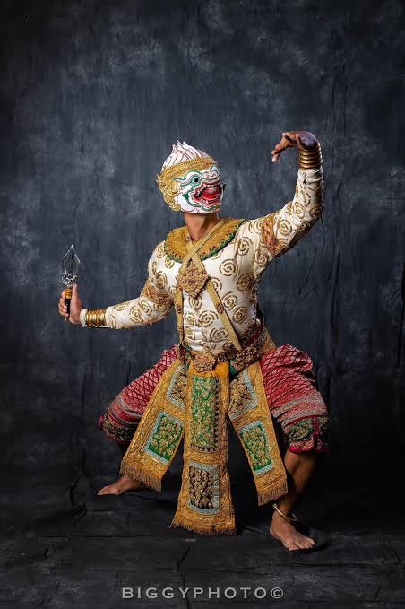
ตัวลิงหรือทหารวานร คือกองทัพสำคัญและผู้อยู่เบื้องหลังชัยชนะของฝ่ายพระราม มีบทบาทสำคัญในการสร้างสีสัน ความสนุกสนาน อารมณ์ขัน และความตื่นตาตื่นใจให้กับการแสดงโขนละคร ตัวละครที่โดดเด่นและเป็นที่รู้จักกันดีคือ หนุมาน (พญาวานรเผือกผู้เป็นทหารเอก) สุครีพ และองคต ผู้ที่จะมาแสดงเป็นตัวลิงมักจะถูกคัดเลือกจากคนที่มีรูปร่างปราดเปรียว เพรียวลีน มีความยืดหยุ่นของร่างกายสูง และมีความคล่องตัวเป็นเลิศ เนื่องจากกระบวนท่ารำของตัวลิงนั้นต้องใช้ทักษะกึ่งกายกรรมโลดโผนควบคู่ไปกับการรำมาตรฐาน
อัตลักษณ์ภายนอกของตัวลิงคือการสวม "หัวโขนลิง" ตามลักษณะสีและหน้าตาของตัวละครแต่ละตัว (เช่น หนุมานจะหน้าขาว ปากอ้า หาวเป็นดาวเป็นเดือน) เครื่องแต่งกายและเสื้อผ้าของตัวลิงจะถูกออกแบบให้มีความกระชับเข้ารูปมากกว่าตัวละครอื่นๆ เพื่อความคล่องตัวในการเคลื่อนไหว ลวดลายบนเสื้อผ้าจะปักเป็นเกล็ดหรือขนตามตัว นุ่งผ้าโจงกระเบนสั้น (รั้งชายโจงขึ้นสูงกว่าปกติ) และมีการติดตั้ง "หางลิง" ไว้ที่ด้านหลังเพื่อความสมจริง
ศิลปะการร่ายรำของตัวลิง คือการผสมผสานอันอัจฉริยะระหว่าง "ท่ารำมาตรฐานนาฏศิลป์" เข้ากับ "พฤติกรรมธรรมชาติของลิง" ตัวละครลิงจะปฏิเสธความนิ่งเฉย ลีลาการรำจะไม่หยุดนิ่ง มีท่าเกาหัว เกาเอว ลุกลน และเลิกลากเหลียวหน้าเหลียวหลังอยู่ตลอดเวลา ท่วงท่าจะเน้นการกระโดด การเคลื่อนที่อย่างรวดเร็ว การตีลังกา และการลอยตัวขึ้นไปเหยียบเข่าหรือไหล่ของยักษ์ (ท่าขึ้นลอย) แฝงไปด้วยความขี้เล่น ทะเล้น แต่ก็เปี่ยมด้วยความว่องไวและทรงพลังในการต่อสู้